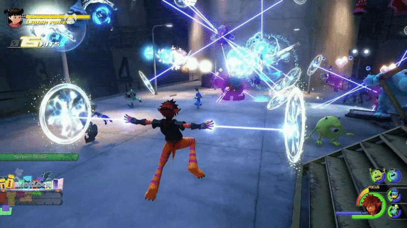
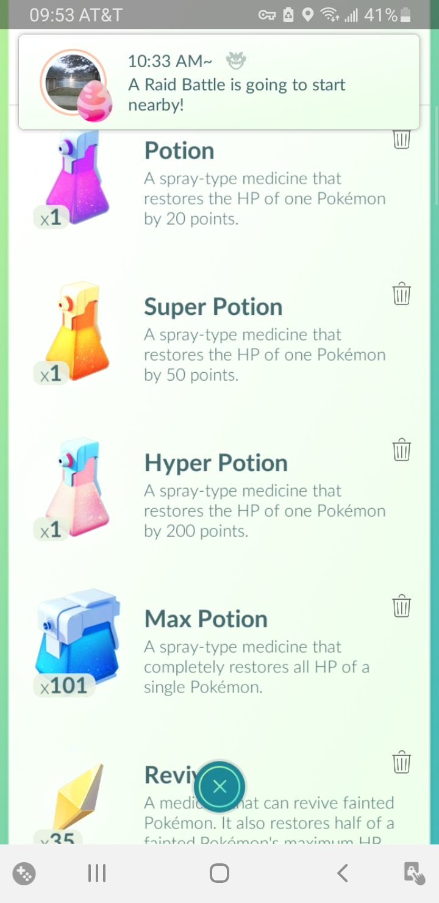

So what exactly is happening?
In countless modern games, we designers love to stick important information in the corners of the screen, and with good reason!
- Consistancy across titles minimizes how much time players spend searching for UI elements.
- The biggest, most front-and-center element of almost any game should be the gameplay.
- Players need to know the information presented in these UI elements.

The problem arises when Steam wants to tell players that an event has occured, such as a friend logging on, starting a game, or sending a message. Suddenly, information is obscured and buttons can not be pressed. If the gameplay demands that information or that input, players then have to wait for the notification to disappear before they can resume their game.
But is it just Steam?
Of course not! Windows used to frequently notify me about a variety of things until I painstakingly trawled through its settings and disabled the majority of its notifications. A handful of games are also guilty of obstructing their own UI: Pokémon Go's notifications cover a good portion of the top of the screen and can get in the way of playing the game. I just wanted to know how many items I have!

So what can we do about it?
Fortunately, there are a handful of solutions to this problem.
- Steam and Windows can delay these notifications until certain criteria are met (until the game is closed for instance). The main problems with this solution are that some of the notifications generated are time-sensitive. Delaying these notifications for 15 minutes, or a few hours makes the notification of your laptop's critically low battery useless.
- Game UI teams can keep information out of the most commonly used notification areas. In the gif above, Valheim keeps its various UI elements away from the bottom right corner, so that when Steam, windows, or something else makes a notification appear there, the gameplay isn't overly hindered.
- For notifications that games create of their own accord, time-insensitive information could be delayed until the player reaches a screen where information will not be obscured.
- Alternatively, each screen could be constructed in a way so that there is always an appropriate area for notifications to appear without hiding critical elements. For example, Pokémon Go's menus could be pushed away from the top of the screen enough to allow notifications the space they require.
- Give players more control over what notifications they recieve. Windows, for the many other thoughts I have about the OS, did eventually allow me to decide how important each category of notification was. Giving players the power to decide what is allowed to interrupt their gameplay can reduce the amount of frustration these notifications can generate.
In Conclusion
This seems like a very solvable issue that affects a wide array of games. Naturally, there are going to be cases where that energy meter simply has to end up somewhere it may be covered. If your game is available on PC and consoles, then there are even more areas of the to potentially keep in mind. If you have any additional thoughts on this topic, feel free to reach out!